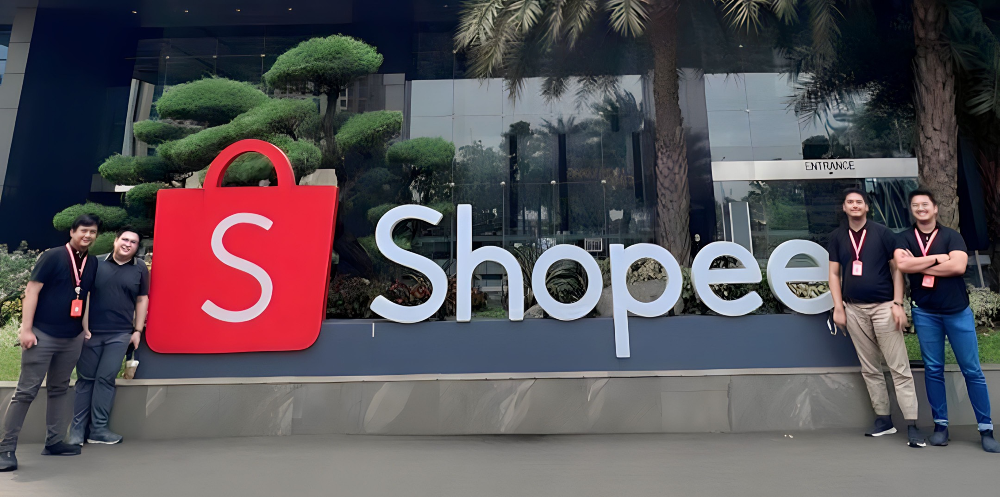

Data Scientist at Shopee International Indonesia
About Shopee
Shopee, a leading e-commerce platform in Southeast Asia and Taiwan, offers customers a seamless online shopping experience with robust payment and logistics support. Shopee's goal is to continually improve its platform and become the top choice for e-commerce in the region through ongoing product enhancements and localized strategies. Launched in Singapore in 2015 as part of Sea, a digital entertainment, e-commerce, and financial services leader in Greater Southeast Asia, Shopee has expanded to multiple countries. The Shopee team is actively growing and invites talented individuals to explore career opportunities on their website.
Main Contributions
- Utilized expertise in predictive analytics to provide guidance and support to BI analysts and business teams, enabling data-driven problem-solving and goal achievement.
- Successfully developed a machine learning model to predict user churn probability, facilitating optimized budget allocation for the finance team and personalized marketing strategies for the marketing team.
- Developed machine learning models for predicting buyer's SES (Socio-Economic Status), achieving an impressive accuracy improvement from ~50% to ~80%.
- Managed the development of machine learning models to predict the probability of retaining buyers, achieving accuracy improvements from ~70% to ~80% through the addition of variables, preprocessing treatments, and parameter tuning.
- Successfully created a Machine Learning Model with an 80% accuracy rate for predicting a user's probability of being a reseller, assisting the Business Development team in allocating campaign budgets more effectively to profitable users.
- Collaborated and communicated with BI engineers to deploy ML models and completed various ad hoc requests and reports for the growth team.